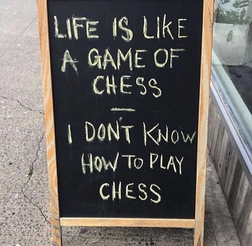

"The mind usually says, “I know, I know, I know.” But the “don't-know mind” is where wisdom lives.”
--Byron Katie
"You can learn only if you do not know. "
--J. Krishnamurti
"Start with "I don't know." Why not start where you'll end up anyway?"
--Adyashanti
In my work, usually by the time someone becomes a client, they have already tried every therapy, every inquiry, every meditation and guru. Nothing has worked, and here they are still unmotivated, still anxious, still depressed, riddled with guilt, shame and regret, addicted, unable to get out of bed.
Making my weird what-the-hell-just-happened ways the end of the road for them.
Naturally these folks are desperate for something different, and lucky for us both, they’re too exhausted to fight when they encounter it.
Which means new things can and do happen.
At the same time, in any moment there have always been one or two clients who spend their sessions with me fighting and refusing whatever help comes their way.
So as maybe you can imagine, I’m tired.
I’m tired of people begging for help and then arguing with that help when they receive it.
I’m tired of the change-of-subject word “but,” as in, Well yes I suppose I do feel better but.
I’m tired of folks honoring and validating feelings they hate, and doing everything possible to keep their pain, because they’re absolutely certain that’s the right way.
I’m tired of the torrents of words unendingly describing misery, instead of simple answers to simple questions.
Lovely reader, maybe you are also wanting some kind of relief and not finding it.
Maybe you are tired too.
Tired of being certain you know what’s right, or what is happening or what you need to do. Tired of believing every voice that tells you who you are, what you should be, what is real, what is important.
So the question is, when is it time for Don't Know to kick in?
I mean, everyone knows an open mind is needed for new info to enter. Nothing can enter a closed door.
When do you give up, when do you give in, when do you surrender to knowing absolutely nothing?
That would be different, wouldn’t it?
”I don’t know.”
“I don’t know if I’m right about me or others or politics or climate change. I don’t know if this is a bad feeling, even though I think it is. I don’t know if there is a self or free will or death. I don’t know what consciousness is, I don’t know what I am, I don’t know what’s true, I don’t know what should happen.
I don’t know anything. I am willing to find out.”
Maybe you can feel a bit of spaciousness, a little bit of sigh, just from reading these words.
Because really there’s only one way to get some space between yourself and feelings you don’t want, yourself and tormenting thoughts, your self and enlightenment (whatever that might be for you.)
And that’s an open mind.
Yet oddly, Don't Know might be the one thing you haven’t tried.
Ever wonder why not? After all, it seems simple enough, right? What’s the big deal in being willing to not know?
Well let’s face it, once that door is opened, who knows what will slip out and be lost forever.
Loosen the grip on being certain and, who or what are you? What’s left, without, “I know?”
That open escape route might lead to discovering just how gauzy this self-thing actually is.
Maybe it's better to suffer for a lifetime than consider that everything you know about yourself, I mean everything- your life, your body, your nature, your history- has been fiction.
Apparently the sense of self, the sense of who you are, would rather be sure of things and hurt, than to give in to uncertainty, know nothing, and feel better.
In which case, thoughts like, I already know this, this is wrong, this won’t work,do the job nicely.
As do miserable feelings like depression, anxiety, and shame.
They protect the self from possible disolution.
Luckily all of that is just more certainty.
Luckily all of that can be answered with Don't Know.
So am I right about any of this? I don’t know.
Is there anything of value even when there’s a closed stuck door and lots of pain? I don’t know.
Am I tired? I don’t know.
Do I know anything about anything? I don’t know.
And with that, a door opens.
And something breathes.
Something relaxes.
Something lets go.
What is it?
Don’t know.
"In the end, nobody can let go of the cliff for us. We have to do it for ourselves."
--Gary Tzu
"It will do you no harm to find yourself ridiculous.
Resign yourself to be the fool you are."
--T.S. Eliot
"To be free is
To know that
One does not know."
--wu'hsin
Watch Judy and Shiv Sengupta discuss spiritual anarchy
Click here to watch Judy on Buddha at the Gas Pump
watch Judy and Walter have fun chatting about about nonduality, the self, consciousness, awareness, free willand other light and breezy stuff
watch Judy and Robert Saltzman talk nonduality
first:- - https://www.youtube.com/watch?v=BAa3UCEyROQ
2nd: - -https://www.youtube.com/watch?v=7fv_vsvaejs
Don't Know
